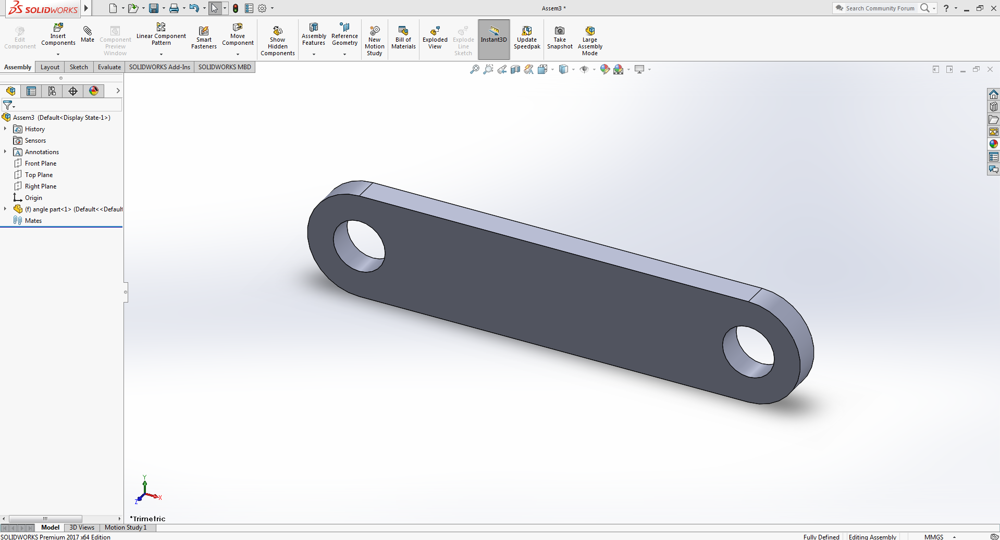
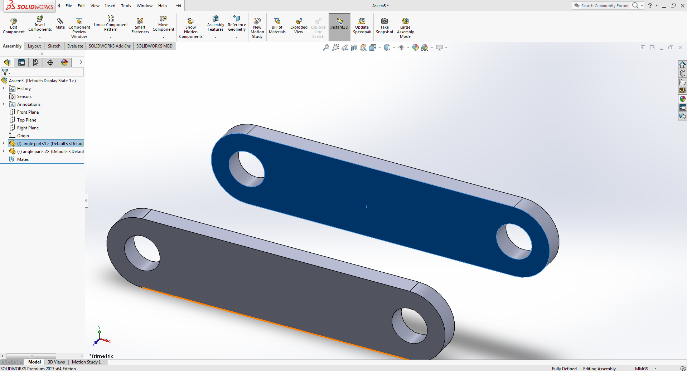
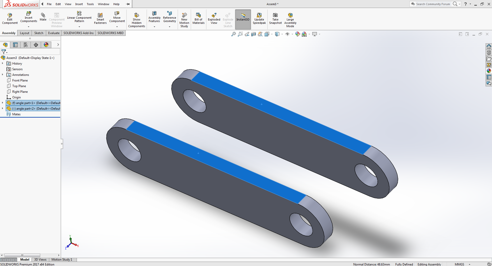
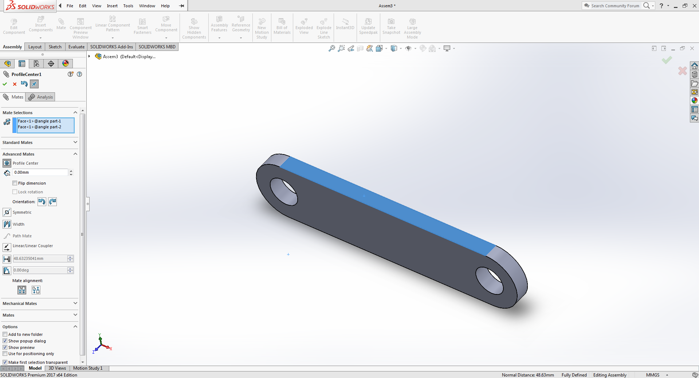
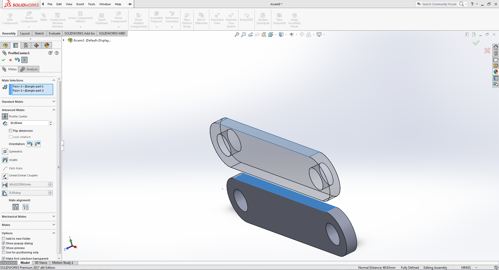
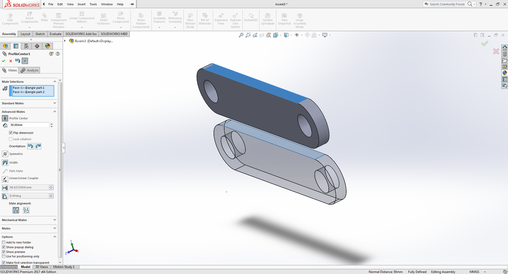
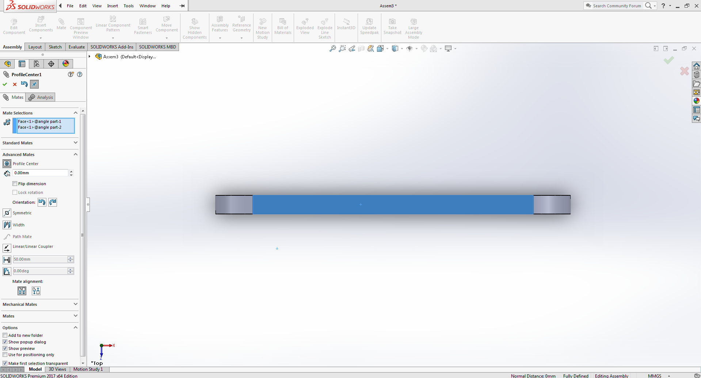
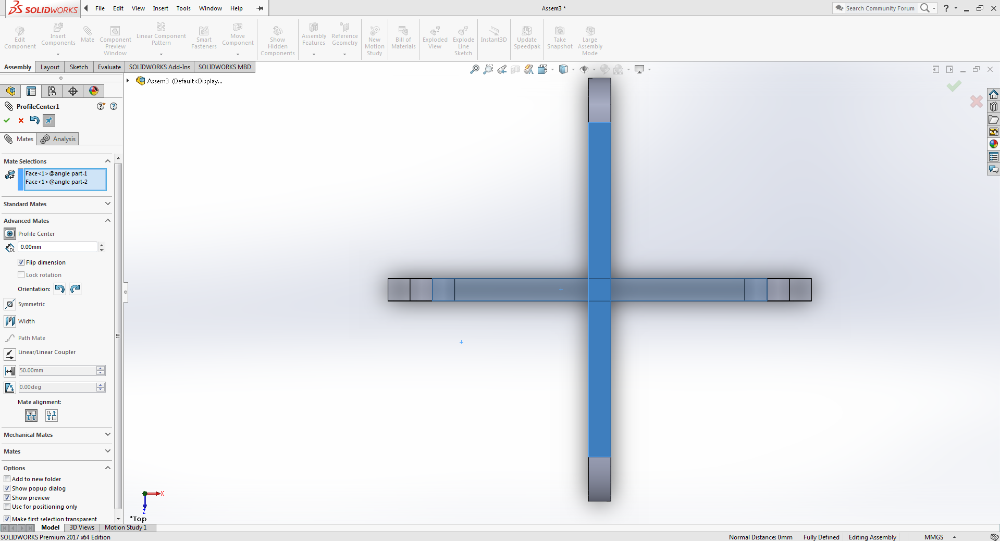

Profile Mate
Profile Center Mate automatically center-aligns geometric profiles to each other and fully defines the components.
For more info on Profile Centre Mate visit here .
Example:
Download Example parts

-
Select the downloaded part in assembly mode of solidworks
Click on the image to activate the zoom functionality,for better viewing use devices with bigger screens -
Copy the componenet by holding ctrl key and dragging the any face of the part in any direction
 -
Select the two faces as shown in the image below
 -
Now apply the profile center mate between the selcected faces, You will find Profile center mate under the Advanced mate section.
After applying the mate you will see that the second body has geometrically oriented itself with the centre of profile of first selected face.
 -
By giving distance value can see the alignment clearly.
 -
Flipping the direction in the distance module will also produce similar result but in opposite direction.
 -
Undo the distance selection and return to profile mate selcetion tab.
 -
Click on the rotate orientation button and check flip box to see the geometries aligning themselves perpendicullarly.
